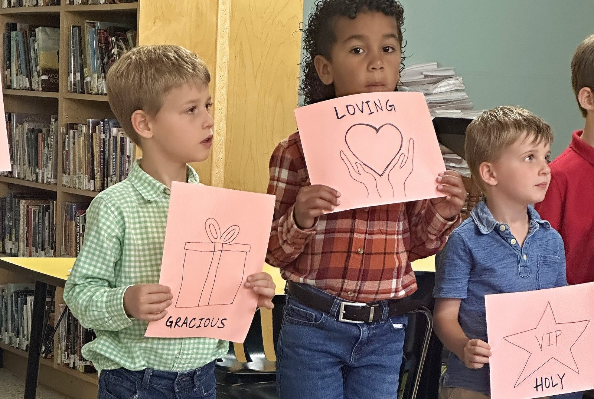
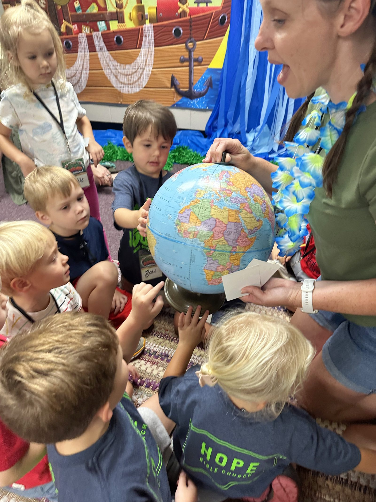
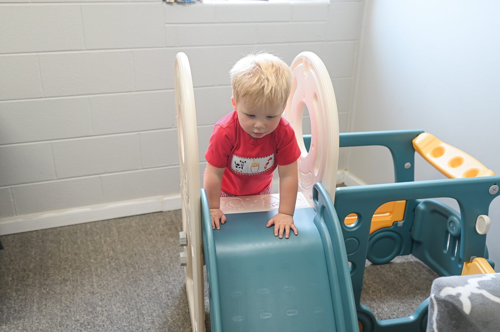

Ministries · Hope Kids
A big view of God.
Sowing the seeds of His Word in the hearts of the next generation.
Hope Kids
We love kids.
At Hope we love kids and want to give them a big view of God, sow the seeds of His Word in their hearts, and invest in their relationship with Jesus and His church. Our goal is that our children's teachers would come alongside parents as they "tell the coming generation the glorious deeds of the LORD, and His might, and the wonders that He has done" so that "they should set their hope in God and not forget the works of God, but keep His commandments." (Psalm 78).

What to expect
During the worship service, we provide a nursery and preschool classroom for babies up to five years old. We provide a gluten-free snack for all children. For moms with newborns, there is a mother's lounge at the far back corner of our sanctuary.
We value your child's safety. Before joining Hope Kids, every prospective volunteer completes a thorough application that consists of a background check and character references.
When you arrive at Hope Kids, you'll fill out a registration card to receive a check-in tag and security stickers. When it's time to pick up your child, just present your portion of the sticker to the Hope Kids volunteer. If your child needs you during the worship service, we'll text you.
Sunday School
At Hope Kids, your kids will experience the love of Christ through caring volunteers, a safe environment in which to play and learn, and age-appropriate classroom activities designed to point them to Christ. We offer age-specific classes for children from three years old to fifth grade at 9AM during the school calendar year.
Class time includes Christ-centered worship in the large group, teaching time in groups sorted by age, and time for life application of the lesson, prayer, and Scripture memory.
Special needs?
We would love to partner with you in ministering to your child. We want to do everything we can to serve any child who would benefit from additional support. If your child could use a little extra help during the service, please contact us here or let a Hope Kids volunteer know on Sunday morning.

